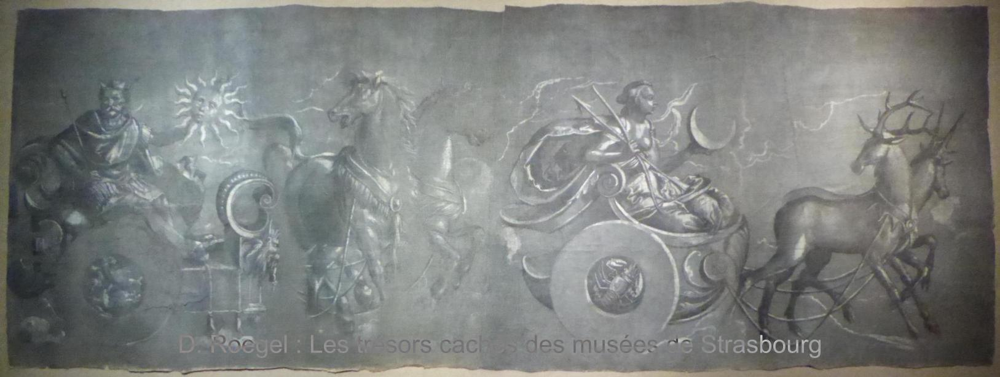

Sommaire :
Les musées de Strasbourg renferment beaucoup de trésors et le public n'en est malheureusement informé qu'au compte-goutte. Des pièces très importantes ne sont jamais exposées, et les conservateurs ne montrent que celles qui entrent dans le cadre d'une exposition. Le patrimoine est en fait mis en scène par les musées, par la DRAC, etc., et il n'y a pas d'accès libre au savoir. Les pièces non exposées (et aussi certaines exposées) ne sont par ailleurs pas accessibles via l'interface de recherche, ce qui rend très difficile leur repérage par le public ou même les chercheurs. La vérité, c'est que les conservateurs ne veulent souvent pas faire connaître toutes leurs collections et cherchent visiblement à se réserver la recherche, alors même que la formation des conservateurs ne suffit pas pour des œuvres comme celles du patrimoine technique et scientifique. Je ne vois pas quel conservateur à Strasbourg a le recul sur les horloges d'édifice pour l'analyse des horloges de Lepaute ou Detouche, ou quel conservateur aurait pu analyser en détail, voire modéliser en 3D, une machine comme la grande additionneuse de Schwilgué. Il faut que les conservateurs soient raisonnables et admettent que non seulement ils n'ont pas les capacités de répondre à tous les besoins de la recherche, mais en outre qu'ils ont besoin des chercheurs extérieurs (et pas uniquement de moi). L'attitude actuelle des musées de Strasbourg (et donc des conservateurs) a tout simplement pour conséquence de freiner la recherche, à l'insu du public. Les conservateurs devraient aussi réaliser des catalogues (et pas uniquement des récolements internes) de toutes les œuvres et rendre ces catalogues accessibles aux chercheurs. Certains musées font cela depuis longtemps, je pense au musée des Arts et Métiers, et les musées de Strasbourg devraient s'en inspirer. Mais le veulent-ils ?
Je ne peux évidemment pas faire le travail des conservateurs, mais comme j'ai eu l'occasion d'examiner de nombreuses œuvres des musées de Strasbourg au cours de ces vingt dernières années, j'ai pensé qu'il serait intéressant de soulever un peu le voile, puisque les musées ne le font pas. Je présente donc ici quelques pièces remarquables que j'ai vues (d'autres suivront), qui sont conservées dans les musées de Strasbourg, et qui sont pratiquement inconnues, les musées ne les exposant pas ou ne mettant pas en avant les travaux de recherche qui se rapportent à eux. Dans certains cas, les conservateurs bloquent même l'accès des chercheurs aux œuvres. Ces blocages sont évidemment futiles.
Beaucoup des œuvres présentées ici étaient exposées dans la salle d'horlogerie du musée des arts décoratifs, mais les aménagements successifs de cette salle l'ont amputée d'une grande partie de ses collections, et ont même dénaturé la présentation de l'horloge astronomique du 16e siècle.
L'ancienne horloge de la plate-forme de la cathédrale de Strasbourg :
En 1786, les horlogers Jean Philippe Maybaum père (1730-1794) et fils (1753-1831) ont installé une nouvelle horloge sur la plate-forme de la cathédrale. Cette horloge sonnait les heures et était adjointe d'un mécanisme séparé sonnant les quarts et qui devait être déclenché manuellement par les gardiens.
Cette horloge a été remplacée en 1924 par une horloge Schwilgué-Ungerer qui remontait aux 3/4 aux années 1840. L'horloge Maybaum est exposée dans la salle d'horlogerie du musée des arts décoratifs et elle a servi à la fin des années 1970 de décors au film de James Bond Moonraker (1979). On trouvera beaucoup plus d'éléments sur l'histoire de ces horloges dans l'article suivant :
Les musées de Strasbourg conservent plusieurs pendules de Maybaum (à l'origine Meÿbaum), mais, à part l'ancienne horloge de la plate-forme de la cathédrale, aucune n'est exposée. Voici par exemple une belle pendule portique Directoire de Maybaum, qui était sans doute autrefois exposée :
Cette pendule est illustrée dans Harsany, La vie à Strasbourg sous la Révolution, 1975, p. 153.
Parmi les autres pendules de Maybaum conservées dans les musées de Strasbourg, on peut citer une pendule révolutionnaire exécutée sous la Convention, avec un cadran mi-décimal, mi-duodécimal (émail de Coteau à Paris), aussi illustrée en 1975 par Harsany.
De Maybaum, il existe aussi une très curieuses pendule à deux cadrans accolés, celui de gauche indiquant le quantième, le mois, le jour de la semaine et l'année dans le cycle bissextile de quatre ans, et celui de droite indiquant les heures, minutes et secondes. Cf. Tieger, Horloges anciennes, 1991, p. 138-139.
La pendule mi-décimale, mi-duodécimale, du musée, comme toutes les pendules et toutes les œuvres scientifiques et techniques, devrait être documentée scientifiquement et pas uniquement par des horlogers qui sont presque toujours incapables de réaliser une vraie documentation comme on a pu le constater au Louvre, au château de Fontainebleau, à Versailles, au musée lorrain à Nancy, au Musée International d'Horlogerie (La Chaux-de-Fonds), au Musée du temps (Besançon) et ailleurs. Tout ce qui n'est étudié que par des horlogers est irrémédiablement à refaire. Ceci est emblématique de la catastrophe du patrimoine horloger en France.
Malheureusement, beaucoup d'œuvres des musées (pas seulement de Strasbourg) sont restaurées sans étude convenable. Il y a certes des rapports de restauration, mais pour en avoir vu un certain nombre, je sais qu'ils sont insuffisants. En fait, les risques majeurs qu'encourent les objets des collections sont 1) la restauration interne « sauvage », c'est-à-dire par des restaurateurs seuls (de l'INP, par le C2RMF, etc., peu importe), sans prendre en compte les besoins des chercheurs ; et 2) les mouvements intempestifs et non traçables des œuvres qui peuvent conduire à des dépareillements. Ces problèmes ne sont pas exceptionnels et ils ne sont pas limités à Strasbourg. Je connais des œuvres qui ont été restaurées sans étude convenable (c'est aussi vrai pour des monuments classés dépendant de la DRAC) à Strasbourg, mais on pourrait citer d'autres cas, comme celui de la pendule astronomique de Fontainebleau. Il n'est pas du tout exclus que certaines des œuvres présentées ici, et d'autres que je n'évoque pas ou ne connais pas, aient déjà été restaurées par des restaurateurs soit-disants professionnels, mais dont les documentations, relevés, etc., sont totalement inadéquats pour les chercheurs, et ceci uniquement en raison de l'entêtement de certains conservateurs à ne pas vouloir travailler avec les chercheurs concernés. Ce n'est que lorsque cette attitude puérile changera que le patrimoine pourra être développé scientifiquement et aussi que le mot « patrimoine » reprendra son vrai sens.
Les petites additionneuses de Schwilgué :
En 1844, Jean-Baptiste Schwilgué (1776-1856), l'auteur de l'actuelle horloge astronomique de la cathédrale de Strasbourg, a breveté une petite machine à calculer qui est aujourd'hui la plus ancienne connue fonctionnant avec des touches. Il y a eu des machines à touches avant celle de Schwilgué, mais on n'en connaît aucun exemplaire.
C'est vers 2003 que je me suis aperçu de l'antériorité de Schwilgué dans ce domaine, ce qui n'avait pas encore été relevé à ce moment-là. J'ai aussi signalé l'existence de ces machines à calculer au musée historique à la même époque, car je savais que plusieurs de ces machines étaient autrefois exposées dans la salle d'horlogerie. Les machines du musée n'ont toutefois été retrouvées dans la cave du Palais Rohan qu'en 2009. Il se peut qu'elles s'y soient trouvées depuis les années 1940. En attendant, en 2008, j'en avais publié une description basée sur le modèle de 1851 conservé à l'École polytechnique fédérale (ETH) de Zurich et que j'avais pu examiner.
Une ou plusieurs de ces machines sont aujourd'hui exposées à l'Arithmeum à Bonn.
On trouvera beaucoup plus d'éléments sur ces machines dans les articles suivants :
C'est aussi en 1844 que Schwilgué a breveté un mécanisme de compteur modulaire et coaxial, qui est l'ancêtre des compteurs kilométriques (odomètres) de voitures et d'autres appareils de ce genre.
Plusieurs de ces compteurs se trouvaient dans les collections des musées de ce Strasbourg et j'avais signalé leur existence au musée historique dès 2003, mais ils n'ont été retrouvés dans la cave du Palais Rohan qu'en 2009. Comme les additionneuses, ces compteurs se trouvaient peut-être dans la cave depuis les années 1940.
En 2017, j'en ai finalement publié une description, qui les présente dans le contexte d'autres machines comme celle de Pereire (1751) ou le compteur d'Évrard de 1846 :
La grande additionneuse de Schwilgué :
Afin de faciliter la taille de roues dentées, Schwilgué avait besoin de réaliser des tables de multiples de diverses fractions et pour réduire les erreurs, il a réalisé une machine pour automatiser ces calculs. Cela dit, il fallait tout de même recopier les valeurs calculées par la machine à la main.
Cette machine a été construite vers 1844-1852, et non en 1830 comme un pseudo-chercheur le prétend depuis 2014.
Il faut noter que j'ai signalé l'existence de cette machine au musée historique dès 2003, mais elle n'a été retrouvée dans la cave du Palais Rohan qu'en 2009. Comme les petites additionneuses et les compteurs, cette grande machine se trouvait peut-être dans la cave depuis les années 1940. J'ai étudié la machine en détail en 2009 et mon travail a été publié en 2015-2016 (voir plus loin). Mon travail est un peu un prolongement de celui que j'avais réalisé sur la première machine à différences de Charles Babbage (Denis Roegel : Prototype Fragments from Babbage's First Difference Engine, IEEE Annals of the History of Computing, vol. 31, no. 2, pp. 70-75, April-June 2009).
La machine a par ailleurs été transférée en 2014 au musée historique à ma demande. Elle était auparavant conservée au musée de l'Œuvre Notre-Dame. C'est ce transfert qui a indirectement mené en 2015 au prêt de la machine à l'Arithmeum de Bonn pour une exposition sur les horlogers et les machines à calculer. À cette occasion, le musée historique a évoqué ces « trésors » sur facebook, sans jamais mentionner mon travail d'analyse.
On trouvera une description complète de cette machine dans les articles suivants qui n'ont jamais été mentionnés par le service communication des musées de Strasbourg, alors pourtant que ce sont les seuls qui décrivent cette machine :
L'horloge d'édifice Lepaute réalisée pour le futur roi Louis XVIII :
Les Lepaute sont une dynastie d'horlogers qui a construit de nombreuses pendules pour les rois et empereurs et aussi des horloges d'édifice pour de prestigieux édifices comme le Sénat, l'École militaire, les Invalides, le château de Fontainebleau, etc.
J'ai eu l'occasion d'étudier les horloges Lepaute parisiennes et j'ai en particulier publié des descriptions des horloges des Invalides et du château de Fontainebleau :
En prolongement de ce travail, j'ai publié en 2023 une description de l'horloge d'édifice Lepaute conservée dans les musées de Strasbourg.
Il s'agit de l'une des plus anciennes horloges d'édifice de Lepaute conservée et elle a été réalisée en 1780 pour celui qui n'était pas encore Louis XVIII. L'horloge possède par ailleurs un mécanisme d'indication du temps vrai par allongement ou raccourcissement du pendule. Ce mécanisme est similaire à celui se trouvant sur les horloges des Invalides et du château de Fontainebleau, mais il leur est antérieur. Cette horloge a jadis été exposée dans la salle d'horlogerie du musée des arts décoratifs.
Le prototype de la grande horloge du musée des arts et métiers à Paris :
Au musée des Arts et Métiers à Paris, on peut admirer dans une vitrine la grande horloge que Detouche et Houdin ont construite dans les années 1860. Mais cette horloge s'avère avoir un prototype, qui est conservé dans les musées de Strasbourg.
Cette horloge a jadis été exposée dans la salle d'horlogerie du musée des arts décoratifs, mais elle est depuis longtemps oubliée (et dépareillée) dans les réserves. Le pendule de cette horloge a rouillé dans la cave humide du Palais, loin de l'horloge elle-même, sans que les conservateurs n'aient fait le lien entre les deux. Et l'horloge est même un peu mal montée, signe du manque de savoir de ceux qui l'ont manipulée à une certaine époque.
Pour une description complète de ce prototype et de l'horloge du musée des Arts et Métiers, on lira les deux articles suivants :
Les réalisations de Tobias Stimmer pour l'horloge astronomique de la cathédrale de Strasbourg :
Tobias Stimmer (1539-1584) est l'auteur de la décoration de l'horloge astronomique de la cathédrale de Strasbourg. Les peintures qu'il a réalisées ont été très peu décrites et la principale description sur le sujet a longtemps été le texte d'August Stolberg de 1898 (Tobias Stimmers Malereien an der astronomischen Münsteruhr zu Strassburg).
Par ailleurs, les musées de Strasbourg conservent d'une part des grisailles qui ont servi à la réalisations de statuettes de l'horloge (les quatre âges de la vie, le Christ, la mort, etc.), et d'autre part les statuettes qui ont été remplacées lors de la construction de l'actuelle horloge au 19e siècle. Les statuettes sont exposées dans la salle d'horlogerie du musée des arts décoratifs, mais les grisailles ont été peu montrées, bien qu'elles aient été, au moins partiellement, exposées par le passé.
En 2005, j'avais réalisé une première version d'une traduction augmentée du texte de Stolberg, ce qui a permis de rendre accessible le travail de Stolberg à quelques uns, mais mon travail avait eu une diffusion limitée.
Enfin, en 2024, à la faveur de l'exposition sur la Renaissance à Strasbourg au musée de l'Œuvre Notre-Dame, j'ai considérablement complété mon travail de 2005 qui est maintenant devenu un livre : Les peintures de Tobias Stimmer sur l'horloge astronomique de la cathédrale de Strasbourg, 2024.
Dans ce travail, je détaille, bien plus que ne l'ont fait les commissaires de l'exposition, les sources de Stimmer. Je me suis en particulier intéressé à la forme originelle des grisailles des chars de l'horloge, qui étaient sans doute dans cet ordre, et pas dans celui présenté à l'exposition de 2024 :
|  |
J'ai aussi exploré certaines pièces de la salle d'horlogerie du musée des arts décoratifs, comme le globe céleste, la carte d'Allemagne, ou encore les panneaux d'éclipses, pièces qui n'ont à ce jour encore jamais été étudiées convenablement.
Le modèle de comput ecclésiastique de Schwilgué (1821) :
En 1821, Jean-Baptiste Schwilgué a réalisé un modèle du futur comput ecclésiastique de l'horloge astronomique.
Ce modèle a longtemps été cru perdu, mais a refait son apparition publique fin 2021. Il aurait pu se trouver dans les musées de Strasbourg, mais il a malheureusement été donné à la fabrique de la cathédrale et celle-ci ne semble pas être pressée de l'exposer. Peut-être devrait-elle l'exposer dans les musées de Strasbourg ? Notons à ce sujet que le musée des arts décoratifs a autorisé en 2022 la réalisation d'un hologramme du coq de la première horloge astronomique, afin que cet hologramme accompagne l'éventuelle exposition du modèle de comput. On ne voit pas trop le rapport, mais pourquoi pas ?
J'ai pour ma part pu étudier ce comput et j'en prépare une description qui paraîtra peut-être un jour.
Dernière modification : 27 novembre 2024.
Denis Roegel